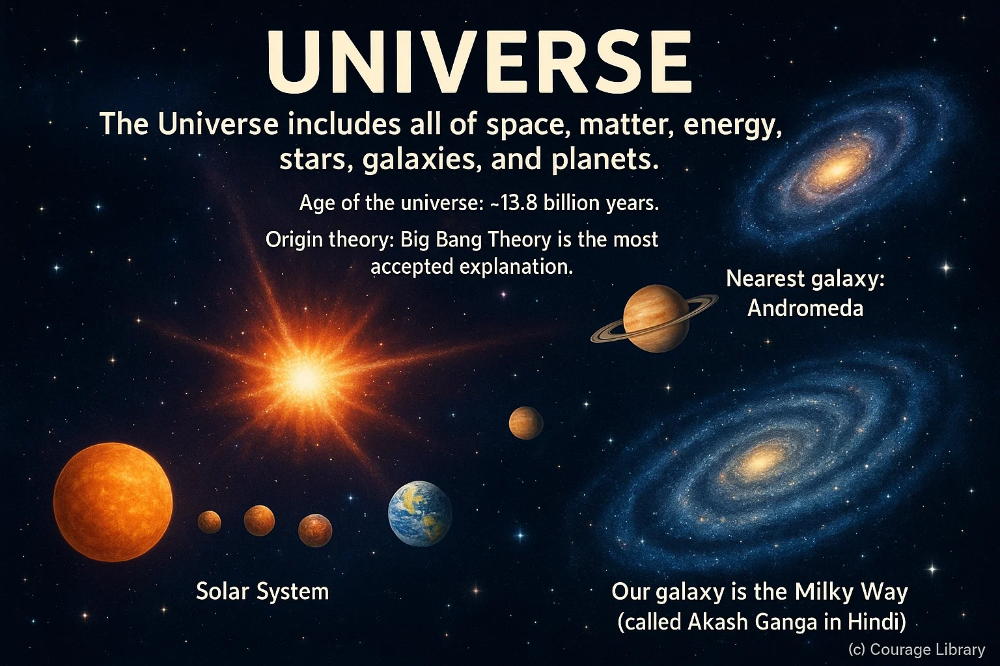
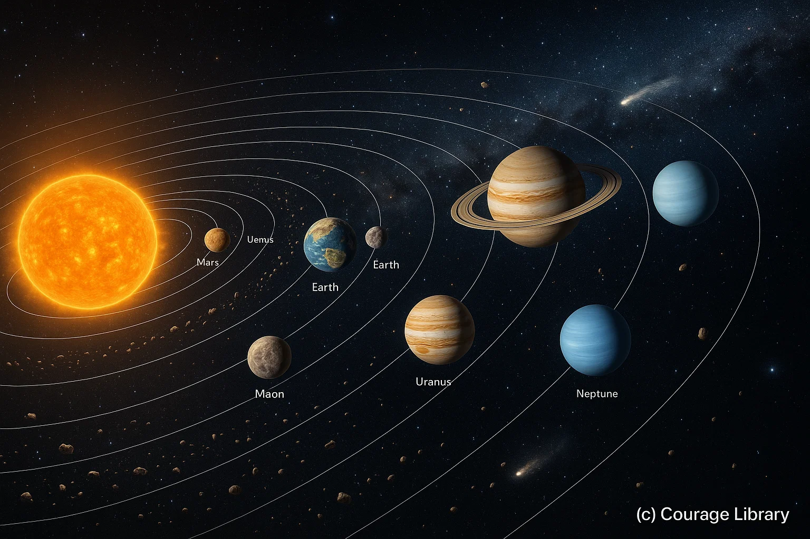
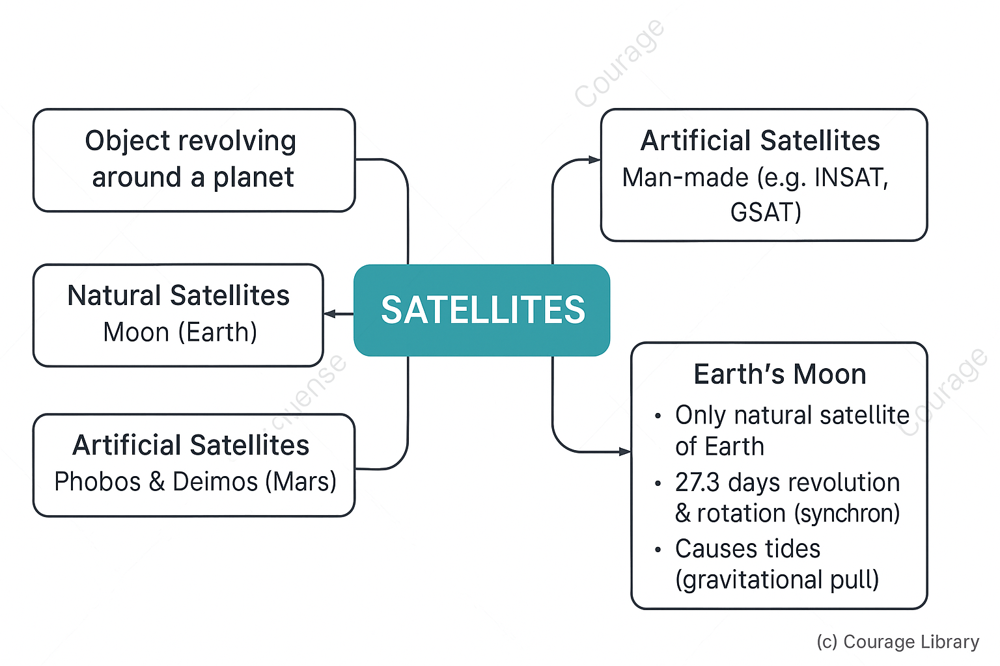
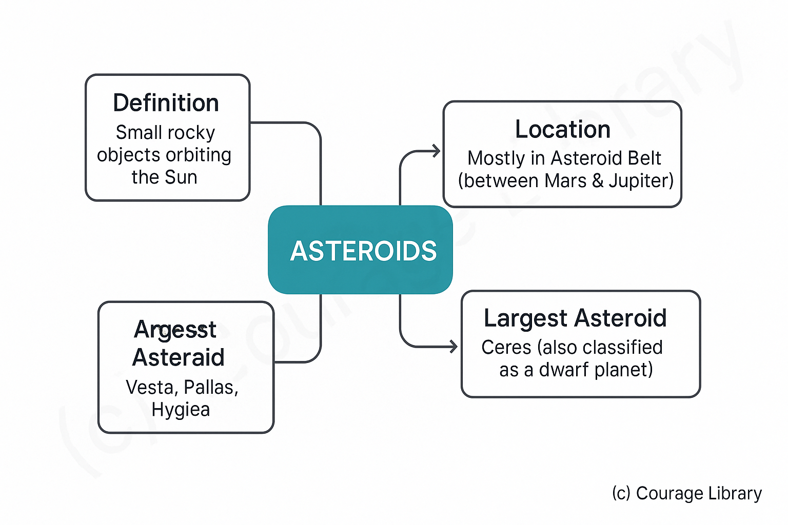
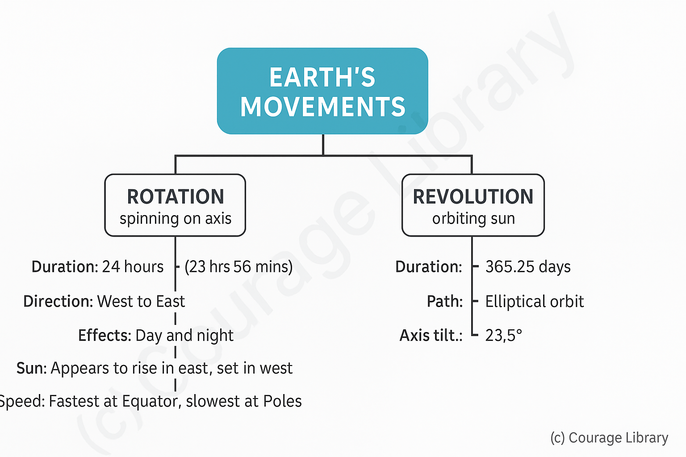
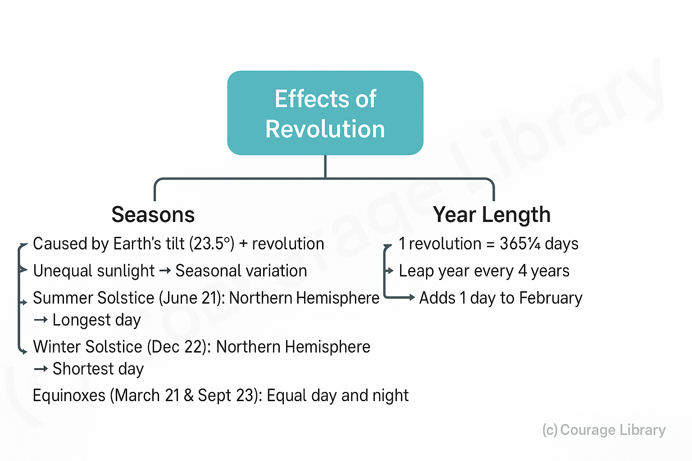

SSC CGL - Detailed Guide 2025
Self-Paced Course
Universe and Solar System
Reference: Lucent GK, NCERT Class 6–12
Universe
- The Universe includes all of space, matter, energy, stars, galaxies, and planets.
- Age of the universe: ~13.8 billion years.
- Origin theory: Big Bang Theory is the most accepted explanation.
- Our galaxy is the Milky Way (called Akash Ganga in Hindi).
- Nearest galaxy: Andromeda.


Solar System
- The Solar System is part of the Milky Way.
- It consists of the Sun at the center and 8 planets, their moons (satellites), asteroids, comets, meteoroids, and dwarf planets.
Planets
| Order | Planet | Key SSC Points |
|---|---|---|
| 1 | Mercury | Closest to Sun, smallest, no moons. |
| 2 | Venus | Hottest planet, retrograde rotation (clockwise), no moons, Earth’s twin. |
| 3 | Earth | Only planet with life, 1 moon, 71% water surface. |
| 4 | Mars | Known as Red Planet, has 2 moons (Phobos & Deimos). |
| 5 | Jupiter | Largest planet, has Great Red Spot, 79+ moons including Ganymede (largest moon). |
| 6 | Saturn | Known for prominent rings, 83+ moons, Titan is its largest moon. |
| 7 | Uranus | Rotates on its side, bluish due to methane, 27 moons. |
| 8 | Neptune | farthest from Sun, strong winds, 14 moons. |
Classification
- Terrestrial planets (rocky): Mercury, Venus, Earth, Mars
- Gas giants: Jupiter, Saturn
- Ice giants: Uranus, Neptune

Satellites
- A satellite is any object that revolves around a planet.
- Natural satellite: Moon (Earth), Phobos & Deimos (Mars), etc.
- Artificial satellite: Man-made object in orbit (e.g., INSAT, GSAT).
-
Earth's Moon
- Only natural satellite of Earth.
- Takes 27.3 days to revolve and rotate around Earth (synchronous rotation).
- Causes tides on Earth due to gravitational pull.
- No atmosphere, extreme temperatures.
Asteroids
- Small, rocky objects found mostly between Mars and Jupiter in the Asteroid Belt.
- Largest asteroid: Ceres (also a dwarf planet).
- Others: Vesta, Pallas, Hygiea.

Meteors, Meteoroids, Meteorites
| Term | Description |
|---|---|
| Meteoroid | A small rock or debris moving in space. |
| Meteor | When a meteoroid enters Earth’s atmosphere and burns due to friction – "shooting star". |
| Meteorite | If part of a meteor survives and hits Earth. |

Earth's Movements
-
A. Rotation (Earth spinning on its axis)
- Takes 24 hours (actually 23 hrs 56 mins)
- Direction: West to East.
-
Effect: Day and Night
- Sun appears to rise in the east and set in the west.
- Equator rotates fastest, poles slowest.
-
B. Revolution (Earth orbiting around the Sun)
- Takes 365.25 days.
- Path is elliptical, not circular.
- Inclination of Earth's axis: 23.5°
Effects of Revolution
-
Seasons
- Caused by Earth's tilt (23.5°) and revolution.
-
Different parts of Earth receive varying sunlight:
- Summer Solstice (June 21): Northern Hemisphere tilts towards the Sun → Longest day.
- Winter Solstice (Dec 22): Southern Hemisphere tilts towards the Sun → Shortest day in Northern Hemisphere.
- Equinoxes (March 21 & Sept 23): Equal day and night.
-
Year Length
- One complete revolution = 365¼ days → Hence, leap year every 4 years (adds 1 day to Feb).

Important SSC CGL Points to Remember
| Topic | Important Point |
|---|---|
| Venus | Hottest planet, retrograde rotation |
| Mars | Red Planet, 2 moons |
| Jupiter | Largest planet |
| Saturn | Ringed planet |
| Uranus | Tilted axis |
| Neptune | Coldest, farthest |
| Earth’s rotation | Causes day and night |
| Earth’s revolution + axial tilt | Causes seasons |
| Asteroid belt | Between Mars and Jupiter |
| Halley's comet | Appears every 76 years |
| Moon | 1 natural satellite of Earth, causes tides |
Developed By Roopasree Challa
Next
Start Your SSC CGL Journey Now!
Join Courage Library to experience disciplined study and expert support.
Be a Couragian!